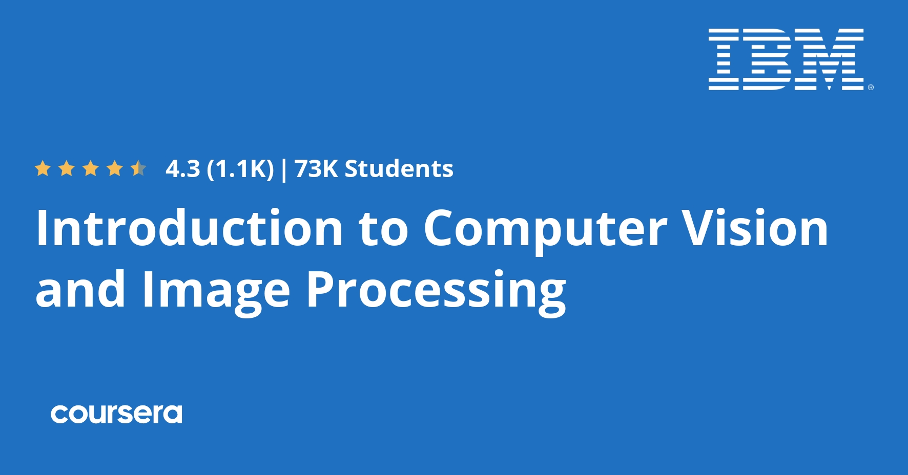

Welcome to my projects section!
Here, you'll find a collection of key projects and courses that highlight the different skills and technologies I've explored throughout my studies.
Feel free to look around and explore my work!
This coursera project taught me about the basic functionalities of the Cloud Healthcare API, with a particular focus on the Digital Imaging and Communications in Medicine (DICOM) data model. During the course of this project, I learned how to create datasets and data stores using the Cloud Healthcare API, as well as how to import and export DICOM data.
This coursera project focuses on utilizing the de-identification functionalities of the Cloud Healthcare API, specifically with the DICOM data model. I learned how to handle sensitive healthcare data by applying methods that remove identifiable information from DICOM datasets, crucial for protecting patient privacy while enabling the use of the data for research and more.
The goal of our project was to develop an advanced, facial recognition-based home security system using Python. We employed libraries like OpenCV for computer vision, and Numpy and pickle for machine learning, training our system with a large dataset to improve accuracy in identifying individuals. Additionally, we implemented a notification feature that alerts homeowners via a mobile app when an unrecognized face is detected, enhancing security with real-time responses.
In this project, we are harnessing the image processing capabilities of the Raspberry Pi using Python. Our focus is to explore advanced image manipulation techniques such as edge detection, calibration, and image thresholding. By leveraging the Raspberry Pi's compact and powerful platform, we aim to develop efficient Python code that performs crucial operations like erosion and dilation to extract meaningful information from images.
In this project, I explored advanced image processing techniques using C++ in a structured library format. Initially, I worked with namespace v1_0, using template functions and std::vector for dynamic image handling, including allocation, specific image creation, and read/write functionalities. I then advanced to namespace v1_1, encapsulating these functions within an Image class and introducing RGB image handling through inheritance. Version 2.0 expanded my work to include operations like histogram equalization, convolution filtering, and multi-thresholding, integrating complex algorithms for practical image analysis.
In this project, I created a license plate recognition system using a Raspberry Pi.
The system uses a PiCamera to capture images and the OpenALPR library to recognize license plates in real-time. The camera captures images, which are then processed to detect and read license plate numbers. The detected plates are displayed along with their confidence levels.
The system continues to run and display the images until stopped by the user. The captured images are processed continuously, allowing for real-time recognition of multiple license plates.
This project involved designing and manufacturing an electronic circuit board for an electronic thermometer.
The steps necessary to create this board, from initial design to final validation, were:
- Designing the Printed Circuit Board Layout
- Printing the PCB
- Creating the PCB
- Drilling the PCB
- Soldering the Components
You can find 2 videos related to this project :
Drilling a Printed Circuit Board
PCB Soldering

In this coursera course, I am learning the fundamentals of computer vision using Python, Pillow, and OpenCV. The course provides a solid foundation in image processing techniques, engaging me in various hands-on projects that enhance my understanding of object detection and image classification, applying machine learning algorithms in realistic practical scenarios.

In my final year of my bachelor's program, I took a course focused on cybersecurity awareness, equipping us with key skills to tackle cyber threats, covering network security basics, the significance of strong passwords, and phishing defense strategies. The course stressed the importance of both personal and professional vigilance as essential to maintaining strong cybersecurity.
This OpenClassrooms course offered me a comprehensive guide to building a modern website using HTML and CSS. It covered key aspects of web development, from understanding the structure and function of HTML to applying stylistic and responsive design features with CSS.
Additionally, I used this course to create my own portfolio website, which you can see as a practical application of what I learned.
With this OpenClassrooms course I gained a comprehensive overview of artificial intelligence, exploring its everyday applications and societal impacts. The course broke down AI fundamentals and delved into specific areas like Machine Learning and Deep Learning. It provided practical insights into managing AI projects and addressed the ethical dimensions of AI technologies.